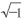
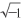
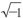
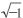
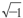
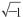
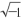

摘要：无理根。R-13.三角形。
我第一次碰到是在很久以前，我上中学的时候。当时的情景我记得非常清楚，就像镌刻在我的脑海里一般：明亮的圆形教室里，坐着几百号圆圆的小脑袋，还有我们的数学老师普利亚帕[1]，当然，这是我们给它取的外号。因为它年久失修，机体松散了，每次上课前值日生把它插上电之后，内置的扩音器就开始“普利亚——普利亚——咝……”地响一会儿，然后才开始上课。有一次，普利亚帕给我们讲解无理数，我记得我号啕大哭，并用拳头捶桌子大叫：“我不要，把给我弄出去！”这个无理根就像某种外来的事物在我的心中扎了根，它在一点点吞没我，我没有办法把它弄明白，去消灭它，因为它是除不尽的ratio[2]。
现在我又碰上了这个。我重新看了一遍这些天我写下的笔记，发现为了避开，我对自己耍了花招，我欺骗了自己。之前那些什么生病之类的，全是胡扯。要是一个星期之前，我一定会毫不犹豫地去那里的，可为什么现在……为什么？
今天还是这样。16点10分，我站在闪闪发光的玻璃门前，头顶是护卫局的牌匾，上面金色的字母闪着纯洁的光芒。透过玻璃我能瞧见里面长长的队伍，每个人都穿着蓝色的制服，他们的脸发着微光，这样一排看下来俨然古代教堂圣像前一排排的长明油灯。他们来到这里是为了完成自己的使命，他们要在大一统国的祭坛上献出自己的爱人、朋友和自己。而我，也急着加入他们，和他们一起。但是，我做不到。我的脚和脚下的玻璃地板被牢牢地焊接在一起了，我就站在那里，像个傻子一样往里面张望着，一步也不能动弹……
“嘿，数学家，想什么呢，这么出神？”
这突如其来的招呼吓了我一哆嗦。定睛一看，原来是诗人R-13.他眼睛乌黑锃亮、含着笑意，嘴唇厚实得如同黑人一般。他是我的老朋友，和他站在一起的是粉色的O.
我生气地转过头去（我想，要是没有他们的打扰，我最后一定可以把从身体里连着肉一起扯出来，因为我会走进护卫局把一切陈述出来）。
“什么想得出神，我那是在欣赏！”我毫不客气地回复他。
“当然，当然，我最亲爱的朋友，您倒不如放弃数学，当个诗人得了，对，当个诗人！加入我们诗人的队伍吧，您觉得怎么样？您要是愿意的话，我一眨眼工夫就能帮您办好手续，啊，怎么样啊？”
R-13说话很快，话像开了闸的水龙头汩汩从他厚实的嘴唇往外冒，还夹带一些溅出来的水花——那是唾沫星子，每当他发字母“P”的时候，口水四溅，就像喷泉一样。
“我现在是搞学术的，将来也会一辈子献身学术。”我皱紧了眉头。我不喜欢开玩笑，但R-13却一直有戏谑别人的愚蠢习惯。
“什么学术，学术就是你用来掩盖胆怯的遮羞布，学术里面有什么？你们不过是修了道高墙把自己保护起来，然后埋着头做着无穷无尽的学术，你们甚至害怕瞧一眼墙外的世界。偶尔看了看墙外的世界，你们还要眯着眼，生怕吓着自己，就是这样。”
“墙——是一切有韧性的事物的基础……”我开始反驳他。
R扑哧一声笑了出来，带出一串唾沫星子。O也张着粉红的嘴笑个没完。我朝他们摆了摆手：“你们就笑吧，反正我也无所谓，我可没有精力管你们。我需要往脑袋里塞点东西，压住这该死的。”
“嘿，我们一起到我那儿去坐坐，做做算术题，你们看怎么样？”我提议道（我想起了昨晚因为做数学题而获得的宁静的一小时。也许，今天我也能这么做）。
O看了看R，然后睁着圆圆的眼睛看着我，我明白了她的意思。她脸上飞起了一层温柔的、醉人的红晕，就像我们的粉红票券。
“可是今天我……根据票券……登记了他，”她朝R点了一下头，“但是他今天晚上有事，所以……”
R湿润的闪着光的嘴唇带着善意向我们说道：“那有什么关系，我和O半个小时就够了。是吧，O？对于你们的数学题，我可一点兴趣都没有，不如就去我那里坐会儿。”
我害怕一个人待着。更准确地说，我不想和这个新的、陌生的我待在一起，他仿佛是因为某种奇怪的巧合，也叫Д-503.
于是我就跟着R走了。说实话，R不是一个严谨的人，在诗歌韵律方面也缺乏天赋，他的逻辑也是颠倒的、可笑的，但是我们还算老熟人啊。所以三年前我们一起选择了这个可爱的、粉色的O不是没有缘由的，这也使得我们的关系比在学校的时候更加紧密。
后来，我们到了R的房间。他房间的陈设与我一样：行为规范，玻璃制的桌椅、柜子和床。但是一进屋子，R就挪动了一把圈椅，然后又挪动了另外一把……屋子里的布置发生了变化，这与房间的标准布置不相符，变得一点也不欧几里得了。R还是老样子，按照泰勒的理论或者从数学的角度看，他永远是个不上道的人。
我们一起回忆起了数学老师普利亚帕，当时我们很喜欢它，在它的玻璃腿上贴满了感谢的纸条。还想起了我们的法学课老师[3]。法学老师的嗓门特别亮，就因为这样，扬声器里总是能吹出一些风来，而我们这些孩子就跟着他扯着嗓子念课文。有一天，坏透了的R-13给喇叭里塞了一堆揉皱的纸条，这样每次法律老师念课文的时候，都有纸条从喇叭里飞出来。R也因此受到了惩罚，毕竟这件事他干得实在是太糟糕了。可是现在回想起来，我们三个人都哈哈大笑——我们三个人真像三角形啊。
“要是他是一个活着的古代人，那会是什么光景啊？"R又遇到了恼人的辅音字母，厚厚的嘴唇送出来一阵唾沫星子。
太阳无处不在。房间的上面和四周都是透明的，阳光长驱直入，房子的下面也反射着光线，O坐在R-13的膝盖上，她蓝色的眼睛里面也闪着一颗小小的太阳。我身上暖和了起来，也慢慢平静下来，不再动弹……
“您的‘一统号’怎么样了？我们很快就要飞到别的星球上去教化那里的居民了是吗？赶紧吧，再加把劲！你也知道我们这些诗人创作实力卓越，再等估计您的‘一统号’就载不动我们的作品啰！每天8点到11点……"R摇了摇头，又挠了挠后脑勺，他的后脑勺就像一个四四方方的被捆在脑袋后面的小行李箱（这让我想起了古时候的一幅画——《在马车上》）。
我听了他的话活泛了起来。
“您也在为‘一统号’写诗？快跟我说说，您都写了什么，例如，今天您都写了些什么好篇章？”
“今天，今天什么都没有写。今天有别的事情要忙……”他发了浊辅音“B”，于是口水又溅了我一脸。
“什么别的事情？”
R皱起了眉头：“什么别的事情？您真想知道，那我也不妨告诉您，我在用诗的形式写一份判决书。被判决的是一个诗人，是我们中的一员，这个蠢货！我和他一起共事两年，一切都是正正常常的，突然有一天他开始说自己是天才，天才不被法律所约束。此外，他还写了一些稀奇古怪的东西……唉，你说这叫什么事！”
R厚厚的嘴唇耷拉了下来，眼睛也黯淡了下来。突然他跳了起来，转过身，目不转睛地朝着一面墙看。我看着他脑袋后面那锁着的小行李箱，心里想着，他会在里面倒腾些什么东西呢？
接着我们都陷入了一种不自然、不对称的沉默之中。我不明白这是怎么回事，但我想肯定发生了些什么。
“很幸运，莎士比亚和陀思妥耶夫斯基那个陈腐的年代已经过去了。”我故意大声说了这句话。
R转过身来，又开始像刚才一样滔滔不绝唾沫四溅地讲话，但我觉得，他眼睛里的光彩消失了。
“是呀，我最亲爱的数学家，我们真走运，走运啊！我们是最幸福的平均数……您那个圈子常说：把从0开始到正无穷大中的所有数进行积分化。换成我们圈子的话，就是把白痴到莎士比亚之间所有人的能力进行积分化。就是如此！”
不知道为什么，我突然想起了那个女号码，还有她说话的腔调。她和R之间仿佛连着一根极细的线，这是根什么线呢？我脑子里的又蠢蠢欲动了。我打开了我的号码牌小盒，16点25分。粉红票券提供的时间只剩下45分钟了。
“我该走了……”我亲了亲O，跟R握了手，走向了电梯。
穿过马路来到大街的另一边，我回头看了看那夕阳余晖中的玻璃大楼，一块块不透明的灰蓝色的窗帘被放下，后面都是符合泰勒韵律的幸福小房间。我找到了位于七楼的R-13的房间，那里的窗帘已经被放了下来。
亲爱的O，亲爱的R.在R身上也存在一种我不太明白的东西（为什么要用“也”这个字，我也不知道，姑且就这样写吧）。但是不管怎么说，我、他和O是一个三角形，虽然这个三角形不是等腰的，但也是个三角形了。如果用我们祖先的语言来说（我觉得对于你们星球的人来说，他们的语言你们更容易理解），我们三个人就是一个家庭。有时我会把自己关在这个简单的、稳固的三角形中，避开外界的一切……能在这里小憩一下，也是很好的。
【注释】
[1] 它是个机器人。
[2] 拉丁语，意为“比值、比率”。
[3] 这里指的不是古代人的神学课，而是大一统国的法律。——原注（俄语中，神学课教师与法学课教师是同词异义。——译注）